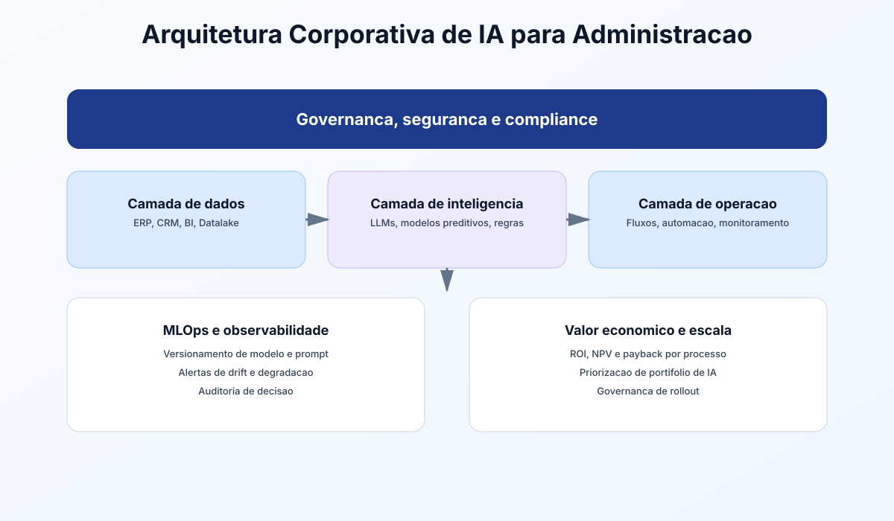

Guia de bolso
Templates para decisão e execução.
Apêndices
Esta seção fecha a apostila com material de apoio para execução real: glossário executivo, templates de decisão, catálogo de KPIs e modelos prontos para governança e escala.

Templates para decisão e execução.
Medição padronizada para comparar ganhos.
Fechamento do curso com próxima onda.
Termos críticos para alinhar times técnicos e executivos sem ruído conceitual.
| Termo | Definição prática | Aplicação no dia a dia |
|---|---|---|
| Baseline | Métrica de referência antes da intervenção | Comparar antes/depois de um piloto |
| ROI | Retorno sobre investimento | Definir se o projeto escala |
| Payback | Tempo para recuperar o investimento | Priorizar iniciativas com retorno rápido |
| SLA | Nível de serviço acordado | Monitorar qualidade operacional |
| Drift | Mudança no padrão dos dados ao longo do tempo | Acionar recalibração do modelo |
| Prompt | Instrução textual para o modelo | Padronizar saídas administrativas |
| Guardrails | Regras de segurança e comportamento | Evitar respostas inadequadas |
| Alucinação | Resposta plausível, porém incorreta | Exigir validação em decisões críticas |
| Viés algorítmico | Distorção injusta em resultados | Revisar critérios de recrutamento/crédito |
| Explainability | Capacidade de explicar a decisão do modelo | Atender compliance e auditoria |
| Data governance | Regras para qualidade, acesso e uso de dados | Controlar risco e consistência |
| MLOps | Práticas para operar modelos em produção | Versionamento, monitoramento e rollback |
Modelos de uma página para acelerar decisões sem perder rigor.
Problema, hipótese de ganho, custo estimado, KPI alvo, risco principal e decisão go/no-go.
Pontuação por impacto, esforço, risco, prontidão de dados e aderência estratégica.
Escopo permitido, dados proibidos, revisão humana, trilha de auditoria e resposta a incidentes.
Baseline, resultados, desvio, aprendizados, riscos residuais e recomendação de escala.
Indicadores sugeridos para medir valor operacional e risco de implementação.
| Área | KPI de produtividade | KPI de qualidade | KPI de risco/governança |
|---|---|---|---|
| RH | Tempo de triagem de candidatos | Taxa de aderência ao perfil | Equidade por grupo avaliado |
| Financeiro | Tempo de fechamento | Taxa de retrabalho contábil | Incidentes de conformidade |
| Marketing | Custo por lead qualificado | Taxa de conversão por segmento | Uso de dados com consentimento |
| Operações | Tempo de ciclo do processo | Taxa de erro operacional | Exceções críticas sem revisão |
| Atendimento | TMA por chamado | CSAT/NPS pós-atendimento | Escalação correta de casos sensíveis |
Prompts para transformar aprendizado em plano executável imediatamente.
Prompt: Roadmap executivo 90 dias
Atue como PMO de transformação com IA. Construa um roadmap de 90 dias para a empresa [nome], incluindo: - 3 processos prioritários - metas semanais - KPI por processo - riscos e plano de mitigação - decisão go/no-go no dia 90
Prompt: Comitê de IA e governança
Estruture um comitê de IA para empresa [porte/setor] com: - papéis e responsabilidades - fluxo de aprovação por criticidade - calendário de reuniões - indicadores de governança - protocolo de incidentes
Prompt: Dossiê para diretoria
Prepare um dossiê de decisão para diretoria sobre escala de IA contendo: - problema e oportunidade - evidência de piloto - impacto financeiro projetado - riscos residuais - recomendação final com critérios de decisão
Marque o nível atual para orientar o próximo ciclo de evolução.
Há testes isolados, sem baseline formal e sem governança definida.
Pilotos com KPI, responsáveis e rotina de revisão periódica.
Mais de uma área com IA em produção e governança operacional ativa.
Portfólio institucionalizado, melhoria contínua e decisões orientadas por evidência.